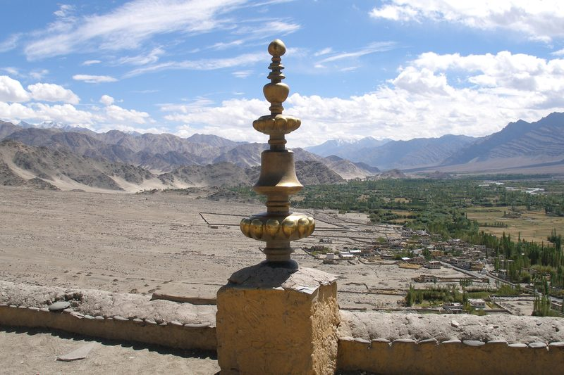

लद्दाख की 28 जगहों के भारत ने नाम बदले, चीन को लग सकता है झटका

लद्दाख की सिंधु घाटी में थिक्से मठ — सर्वे ऑफ इंडिया के नक्शे पर 28 जगहों के मानक नाम दर्ज
भारत सरकार ने केंद्र शासित प्रदेश लद्दाख में 28 जगहों और भौगोलिक संरचनाओं को आधिकारिक तौर पर सर्वे ऑफ इंडिया के नक्शे पर मानक नामों के साथ दर्ज किया है. गृह मंत्रालय ने 2 अक्टूबर 2026 को इसकी जानकारी दी. सरकार ने यह काम लद्दाख प्रशासन के साथ बातचीत के बाद किया है. इन 28 जगहों में पहाड़ की चोटियां, जमीन के हिस्से, दर्रे, ग्लेशियर, घाटियां और दूसरी भौगोलिक जगहें शामिल हैं. सरकार के अनुसार, इन जगहों को आधिकारिक नक्शे पर दर्ज करने का मकसद उनकी सही पहचान को आसान बनाना और आम लोगों के बीच उनके नाम और भौगोलिक महत्व को लेकर जागरूकता बढ़ाना है. लद्दाख की 28 जगहों को किया गया दर्ज सर्वे ऑफ इंडिया के आधिकारिक नक्शे पर दर्ज की गई जगहों में अतिशा गिरी नाम की चोटी, ब्रांग्सा नाम का जमीन का क्षेत्र और चपचिंगल पास जैसे नाम शामिल हैं. सरकार ने इन जगहों को लद्दाख के आधिकारिक नक्शे में उनके मानक नाम और भौगोलि